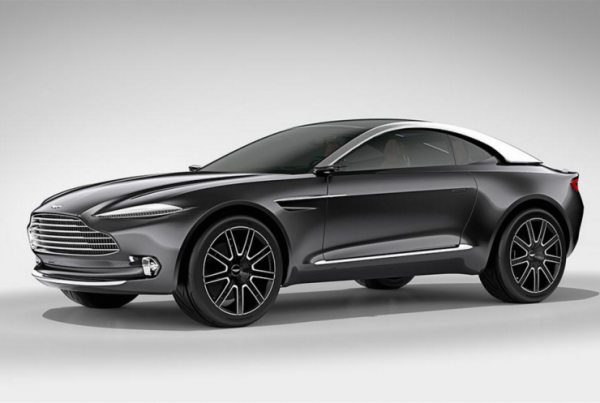

怪异盒子模型
实现分栏
在这次拍卖会上我们会看到大量在 1300 年 - 1976 年间出现的科学仪器。它们承载这计算的历史。
从 14 世纪的象限仪到开启家庭计算革命的标志性的 Apple-1，如果你有幸亲临现场，那么你将能够切实感受到计算历史的发展和繁荣。
Apple 1 电脑发布于 1976 年，当时全球有 200 台这样的电脑出售，
而这 200 台电脑全部都是史蒂夫·乔布斯和斯蒂夫·沃兹尼亚克亲自动手组建制作的。
但是根据佳士得拍卖行的介绍，目前全球仅存 50 台 Apple 1 电脑。从这我们也就可以看出 Apple 1 电脑的稀有和珍贵之处，
有心收藏的苹果产品的果粉真是不应该错过。
这台 Apple 1 电脑的起拍价为 240,000 英镑（约合 370,000 美元），不过最终成交的价格可能会比这个高出不少，
佳士得拍卖行预计最终的成交价会在 300,000 英镑（464,000 美元）和5 00,000 英镑（约合 773,000 美元）之间。
这里我们介绍一下关于这台即将拍卖的 Apple 1 电脑目前的情况：这台电脑其实自 2005 年起就没有人试图去开机或者启动它。
没有人测试过它的电源以及各个电子部件。佳士得拍卖行表示，“我们预计它将能够再次运行工作，
但是我们建议你要找一个有相关经验的工程师来做这样的尝试。”
另外如果你成功拍卖到这台电脑，你还将同时获得当时苹果公司发行的与它相关的手册。
这些手册是苹果公司另外一个创始人 Ronald Wayne 所写的。
Apple-1 被公认为个人电脑革命的先驱产品，它是第一款售前预先组装好的个人电脑产品。
很多机构收藏家都在收集与计算机历史有关的文物，个人收藏家很难在市面上买到此类文物，而且此类文物的拍卖价仍在不断上升。
2014 年宝龙拍卖行在纽约市售出一台由苹果联合创始人斯蒂夫·沃兹尼亚克亲自制作的 Apple-1 电脑，拍卖成交价为 90.5 万美元。
那台 Apple-1 也因此成为全球价格最高的计算机文物，买家是密西根州迪尔伯恩市的亨利福特博物馆。
佳士得曾在 2013 年售出一台 1976 年生产的 Apple-1，成交价为 387750 美元；它还在 2010 年的时候在伦敦售出另一台 Apple-1，
成交价为 133250 英镑，按当时的汇率计算约合 212267 美元。
使用伸缩盒实现居中

弹性盒模型布局
手风琴菜单实现